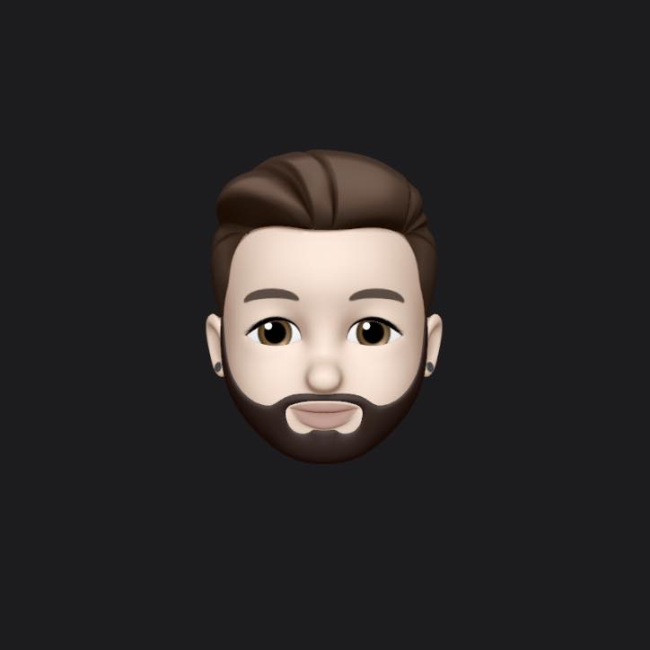

Kevin Soria

Professional Summary
Highly motivated and enthusiastic web developer with a strong passion for creating innovative and visually appealing websites. Skilled in front-end development languages such as HTML, CSS, and JavaScript, as well as frameworks like React and Vue.js
Core Competencies
- Proficient in HTML, CSS, JavaScript, and related frameworks (React, Vue.js)⭐️⭐️⭐️⭐️⭐️
- Strong understanding of responsive design principles and mobile-first development⭐️⭐️⭐️⭐️⭐️
- Knowledge of front-end development tools and workflows (Webpack, Babel, Git)⭐️⭐️⭐️⭐️⭐️
Professional Experience
Web Developer - XYZ Company - San Diego, CA
- Developed and maintained responsive websites using HTML, CSS, and JavaScript, ensuring cross-browser compatibility and optimal user experience.
- Collaborated with designers and project stakeholders to translate wireframes and mockups into functional web pages.
Freelance Web Developer - Remote
- Developed custom websites for clients, incorporating their branding and specific requirements.
- Collaborated closely with clients to understand their business objectives and translate them into effective web solutions.
- Implemented responsive designs to ensure websites were mobile-friendly and accessible across devices.